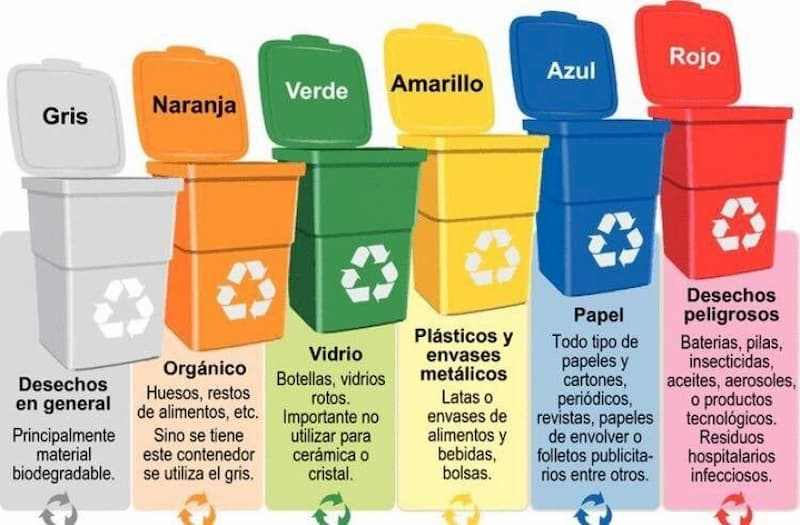

El reciclaje es la recolección y el procesamiento de desechos de papel, carton, vidrio, plastico, etc para crear nuevos productos basados en estos materiales. Al utilizar materiales reciclados y reciclar, ahorramos el agua y energía necesarias para de esta forma no contaminamos el planeta y ayudamos a que por ejemplo no se extingan animales, evitar la contaminacion atmosferica, explotacion de recursos naturales,
• ¿porque el reciclaje deberia de ser obligatorio?
El reciclaje como ya habiamos dicho es muy importante para el medioambiente, si la poblacion dejara de reciclar nos quedariamos sin recursos y nos moririamos por la contaminacion de aire. Por eso mismo el reciclaje deberia de empezar a ser obligatorio, ya que la contaminacion acabaria con el mundo. Para ayudar podrias utilizar estos tachos: 